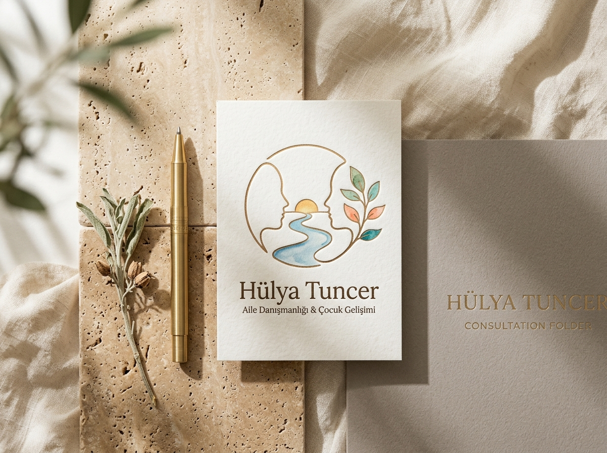
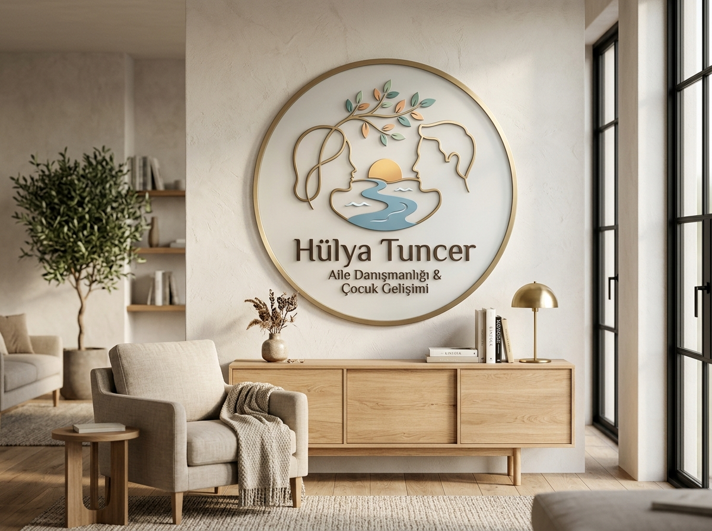
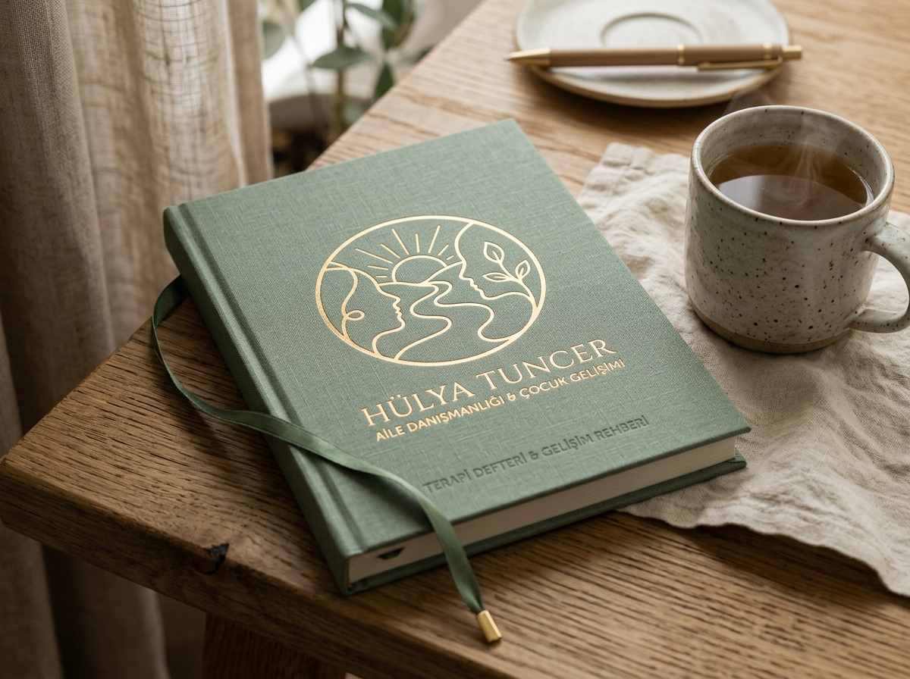

“Karşılaşma, Akış ve Büyüme”
Two Faces, One River, Infinite Growth
“İki can birbirine baktığında; aradaki mesafe bir uçurum değil, birlikte büyünecek kutsal bir bahçedir.”
Geleneksel ve kalıplaşmış çekirdek aile figürlerinin çok ötesinde evrensel bir insan bağı: Birlikte büyüyen iki kardeşi, aynı hayatı ve evi paylaşan iki yol arkadaşını, hayat ortaklarını ve insanın kendi özüyle yüzleşmesini anlatan, varoluşsal psikoloji ve doğa terapisi temelli bir başyapıt.


Sembolün 5 Ruhsal Katmanı
Her bir çizgi, terapi sürecinin ve sağlıklı insan ilişkilerinin temel bir dinamiğini temsil eder.
1. İki Profil: Karşılaşma
İki bağımsız insan profili birbirine yönelir. Biri diğerini istila etmez, kimliğini yutmaz. Martin Buber’in “Ben ve Sen” felsefesinde olduğu gibi; iki can kendi dik duruşunu koruyarak birbiriyle temas kurar.
2. Nehir & Güvenli Çanak
Altı saran adaçayı ve okyanus laciverti kavis güvenli bir liman (Holding Environment) oluşturur. Ortadan kıvrılan berrak nehir ise iletişimin dinamik, canlı ve empatiyle akan yolunu simgeler.
3. Doğan Altın Güneş
Ufukta yükselen altın şafak; ilişkilerde yaşanan tıkanmaların, yasların veya çatışmaların ardından gelen iyileşmeyi, umudu ve yeni bir başlangıcın sıcaklığını müjdeler.
4. Göğe Açılan Yaşam Filizi
Çocuk gelişimi ve eko-terapi (Doğada Aile) felsefesi: Sudan ve güneşten beslenen çok renkli yapraklar (akıl, duygu, beden ve sosyal bağlar) gökyüzüne doğru ahenkle serpilir.
5. Zirvedeki Altın Öz
Filizin en tepesinde süzülen altın damla; kişinin kendi benliğinde eriştiği içsel dinginliği, berrak farkındalığı (mindfulness) ve ruhsal bütünlüğü taçlandırır.
Terapötik Renk Paleti
Doğallık, güven, empati ve ferahlığı harmanlayan organik tonlar.
Stüdyo Mockup Fotoğrafları
Amblemin kırtasiye, klinik tabela ve yayın materyalleri üzerindeki lüks ve prestijli duruşu.

Kurumsal Kırtasiye & Danışan Dosyası
Doğal traverten mermer ve ham keten kumaş zemin üzerinde pamuklu kağıda kabartma altın varak ve suluboya renkleriyle basılmış kartvizit ve danışan görüşme dosyası. Yanında pirinç dolmakalem ve adaçayı filiziyle sakin bir karşılama.

Klinik & Danışmanlık Odası Duvar Plaketi
İskandinav tarzı sakin aile terapisi bekleme ve seans salonu. Kireç sıvalı sıcak duvarda 3 boyutlu bronz ve akrilik kabartma olarak işlenmiş dairesel mimari tabela. Doğal meşe konsol ve zeytin ağacıyla güven veren huzurlu atmosfer.

Danışan Günlüğü & Gelişim Defteri
Adaçayı yeşili keten kumaş ciltli, altın varak baskılı özel terapi defteri. Masif meşe çalışma masasında, taze demlenmiş bitki çayı eşliğinde danışanlara hediye edilecek veya atölyelerde kullanılacak özel yayın standardı.